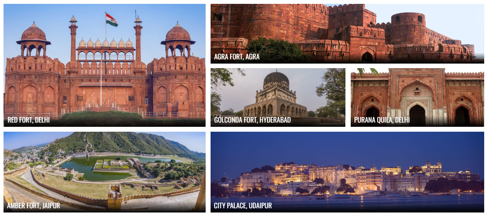

India is a country with rich cultural heritage and history and to experience its regal lineage, one must visit some of the majestic forts & palaces in the country. These magnificent forts and palaces were built centuries ago and a notable feature about them is the exquisite architecture that has survived till date and still receives appreciation worldwide.
these forts and palaces is the best way to uncover a real treasure of Indian history. These serve as great reminders of the bygone eras, mystical kingdoms & their rulers. Most of the forts were built to act as a defence mechanism during wars in order to keep the enemies away.
These monuments still serve testimony to the test of time they have undergone and have yet maintained their beauty throughout these years. Today these forts are serene, with artfully crumbling yet proudly standing facades and spectacular views.
